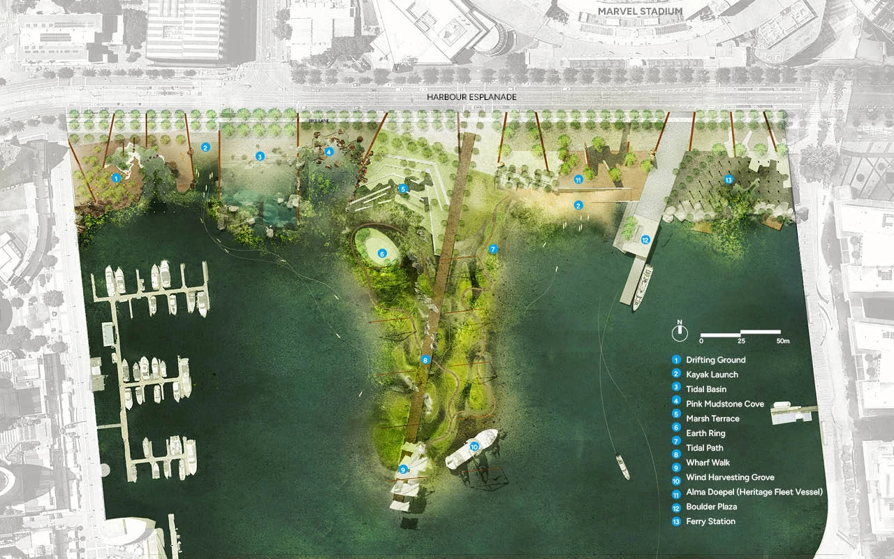
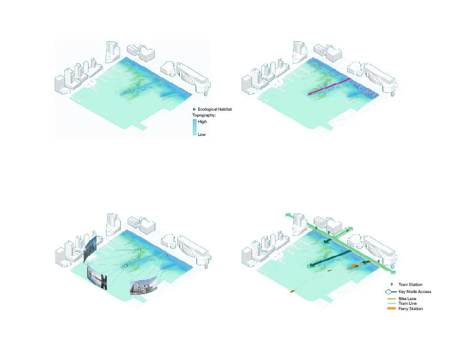
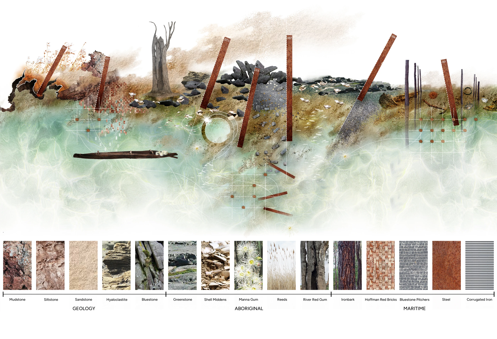
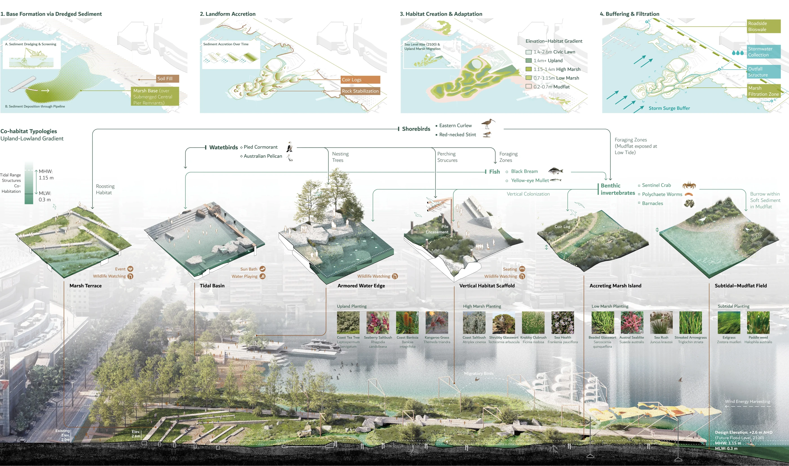

- Location
- Victoria Harbour, Docklands, Melbourne, Australia
- Year
- 2026
- Type
- Landscape competition proposal
- Design team
- Zicheng (Kai) Zhao, Jiewen Hu, Chaowu Li
- External supervisor
- Yuehui Gong

Ground in Friction
At Victoria Harbour, shifting dredge sediments, tidal habitats, and a grid of corten columns bring ecological processes into friction with the ordering systems of Melbourne’s industrial waterfront.
Project details
Project statement
Built on the filled remains of the West Melbourne Swamp, Docklands is a landscape repeatedly remade to suppress uncertainty. What was once a saltwater lagoon, marsh, and estuarine mudflat was successively drained, dredged, indexed, and parcelled into port infrastructure and later a financialized waterfront precinct. In this process, dynamic ground was converted into something stable, legible, and tradable. Complexity was not erased so much as compressed into image: a waterfront made to appear orderly, permanent, and governable.
This proposal refuses to produce another resolved image of place. Instead, it treats landscape as a critical medium for exposing conflicting regimes of ground. Docklands is not approached as a site awaiting a new identity, but as contested land shaped by incompatible ways of understanding and using it: Country as relational and living; port territory as measurable and logistical; and contemporary waterfront urbanism as spectacle, asset, and managed lifestyle. The project does not reconcile these positions into a polite narrative, but places them in friction.
That friction begins with the ground itself. Sedimentary dredge material, historically used to overwrite wetland ecologies, is returned to the site not as stabilizing fill but as loose substrate open to settlement, erosion, and tidal variation. As it settles unevenly, targeted topographic interventions establish an ecological gradient spanning drier uplands, high and low marshes, and intertidal mudflats. Each zone supports specific faunal assemblages while preparing for climatic realities. Strategic high points are retained to provide a landward runway for marsh migration, aligned with 0.8 metres of sea-level rise by 2100. Ground is redefined as an active process of accretion and seasonal change rather than a finished surface.
Juxtaposed against this unstable field is a maritime order. A grid of corten columns, inscribed with the numerical indexing of port logistics and embedded in the paving, extends across the site as an ordering device. Reinforcing this logic, the reconstructed frame of a demolished shed registers the industrial past while attempting to impose structure on fluid terrain. The exposed seafloor functions as a palimpsest of swamp residue, maritime debris, and contemporary urban traces, revealing the layered history the site was designed to conceal. Yet these elements fail to master the landscape; as sediments shift and water levels fluctuate, the grid becomes misaligned, partially submerged, and reabsorbed as a vertical armature for emerging habitats.
As this system of control reveals its limits, the surrounding skyline—the ultimate symbol of real-estate certainty and spectacle—is subverted. The project reduces the city to background noise: through tall marsh vegetation and uneven terrain, visitors lose the continuous visual command typical of waterfronts. Openings in the foliage frame the towers and infrastructure not as triumphant vistas, but as abrupt interruptions.
Ultimately, this is neither a nostalgic restoration of the swamp nor the fabrication of a unified identity. The project reconfigures the site as contested ground, holding competing attitudes toward land in confrontation. Acting as a provocation rather than a finished destination, it poses a critical question: what kind of relationship to land should shape Docklands next?


Drawings and images








